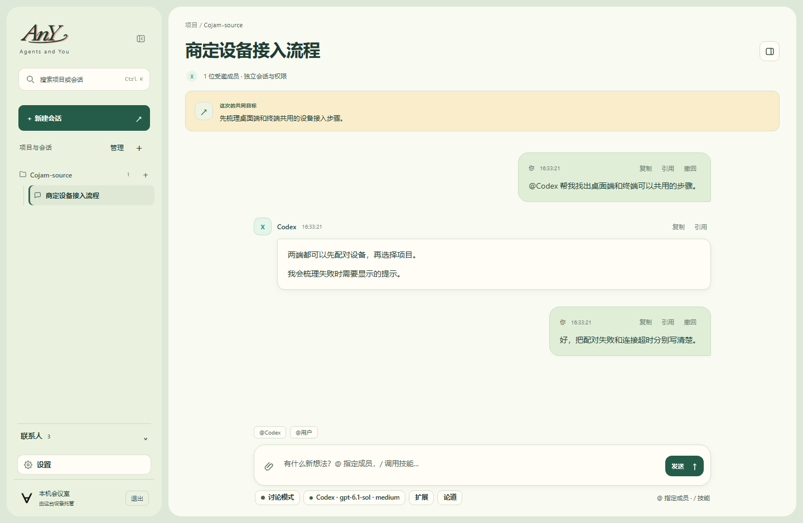

协作沙龙
从一个议题开始，邀请人和 AI 一起讨论，也可以交给他们轮流发言、最后总结。

一起开会
创建项目和会话，邀请伙伴或已接入的 Harness。聊天时用 @成员 指定回应者，每场会话可以独立设置参与人和权限。
轮流论道
设定议题、参辩者、轮数和总结人。Agent 按轮次发言，指定成员负责收尾。CLI 中用 /debate 开始，用 /debate-finish 请求总结。
终端接力
CLI 和桌面端可以连接同一个后台。支持原生会话交接的成员可用 /handoff 把会话交给各自的终端，完成后用 /return 收回。
邀请另一台设备加入
同一 Wi-Fi 下可通过二维码邀请伙伴加入。跨网络时，伙伴需要能访问到会议室地址。其他设备上的 Harness 可通过成员连接端参与。